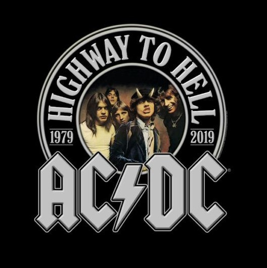
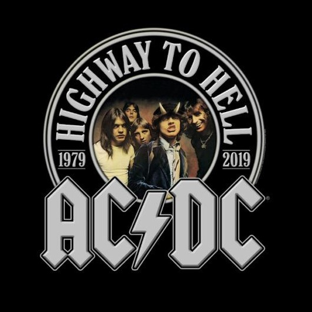
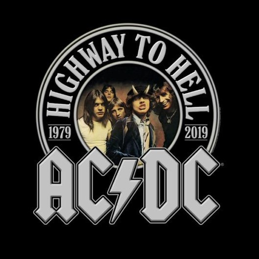
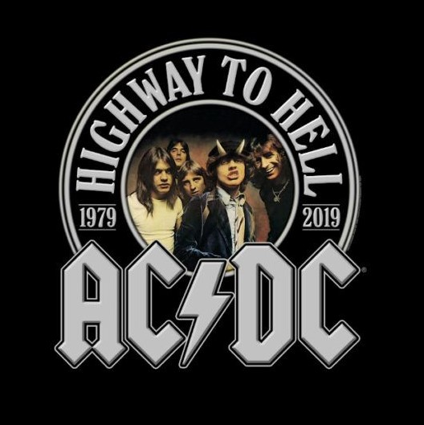

The Beatles fue una banda de pop/rock británica formada en los 60 y considerada como la de mayor éxito comercial y crítico de todos los tiempos. Tal es la repercusión de la llamada ‘Beatlemanía’ que sus letras, que representaron a los ideales progresistas de la época, todavía perduran hoy en día. Los orígenes del grupo se remontan al año 1956 en que John Lennon creó la formación The Quarry Men junto a su amigo Peter Shotton, que la abandonó al poco tiempo. A la banda se unieron Paul McCartney, George Harrison y Stuart Sutcliffe, al tiempo que buscaban un nuevo nombre para el grupo. El elegido fue The Beatles, juego de palabras entre el estilo musical que llevaban a cabo, el Beat, y el insecto Beetle (escarabajo), que eligieron por su admiración del grupo The Crickets (Los grillos). Bajo este nuevo nombre se unió el batería Pete Best, y los cinco comenzaron a actuar por clubes de Liverpool y Hamburgo y a adquirir una incipiente popularidad. En 1961 Sutcliffe dejó la formación, al igual que Pete Best, que fue sustituido por Ringo Starr.
Guns n' Roses se formó en Los Angeles en 1985, cuando se juntaron dos guitarristas Slash e Izzy Stradlin, el bajista Duff McKagan, el batería Steven Adler y el vocalista Axl Rose. Con esta composición, el grupo lanza en 1987 su primer álbum, Appetite for Destruction, bajo el sello Geffen Records. Un disco ya con temas de leyenda como el Sweet Child O' Mine, con uno de esos riffs de guitarra inolvidables, o con Welcome To The Jungle. La banda comienza una gira y ofrece numerosas actuaciones hasta que, gracias a la MTV, que les da a conocer a todo el mundo, su disco consigue auparse a los puestos más altos en las listas americanas.Paralelo a estos éxitos, sus apariciones en público resultaban bastante escabrosas. Tan pronto destrozaban las habitaciones de los hoteles de las ciudades donde actuaban, como montaban peleas o anulaban conciertos por problemas de drogas.En 1988 se publica G N' R Lies. En 1989 actúan en la entrega de los premios MTV y comienzan una gira con los Rolling Stones. En 1990 Adler abandona el grupo por su adicción a las drogas, y es sustituído por Matt Sorum. Tras un duro trabajo, en 1991 publican dos álbumes consecutivos: Use Your Illusion I y Use Your Illusion II, que presentan una gigantesca gira con gran éxito. Dos discos para la historia. Actúan en el festival Rock en Río, en el estadio Maracaná. Ese mismo año (1991) Izzy Stradlin abandona el grupo por el cansancio de las giras y por desavenencias con Axl. Tras multiples discusiones el grupo se lo queda Axl Rose, mientras ya en el siglo XXI, el otro líder del grupo, el guitarrista Slash, se monta en una nueva aventura Velvet Revolver. Chinese Democracy, es la gran apuesta de Axl, uno de los discos más esperados de la historia de la música.
AC/DC es una banda de hard rock británica-australiana, formada en 1973 en Australia por los hermanos escoceses Malcolm Young y Angus Young. Sus álbumes se han vendido en un total estimado de 200 millones de copias,34 embarcándose en giras multitudinarias por todo el mundo y sus éxitos han musicalizado varias producciones cinematográficas sobresalientes.5678 Son famosas sus actuaciones en vivo, resultando vibrantes y exultantes espectáculos de primer orden.9 Mucho de ello se debe al extravagante estilo de su guitarrista principal y símbolo visual, Angus Young, quien asume el rol de guitarrista principal durante los conciertos, gracias a sus dinámicos y adrenalínicos despliegues escénicos uniformado de colegial callejero.10 Al comienzo, los conciertos y tiempos por los cuales sufrieron diversos cambios en su alineación.1112 En 1974, la llegada del cantante Bon Scott se convertiría en una pieza clave del éxito del grupo. Su presencia en escena, lo convirtió en uno de los personajes más carismáticos de la historia del hard rock.131415 La formación se estabilizaría con Cliff Williams (bajo) y Phil Rudd (baterista).